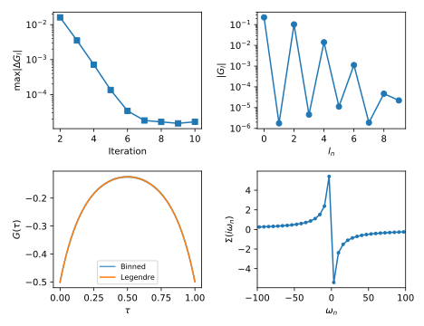

DMFT self consistent framework
This is a small framework for doing self consistent DMFT calculations for the Hubbard model on the square lattice using the triqs_cthyb impurity solver. The framework is based on the TPRF helper class ParameterCollection that makes it easier to keep the results of a calculation in a single object that can be stored and passed as argument.
A script performing a self consisten calculation using the framework takes the form
from common import *
p = ParameterCollection(
t = 1.,
B = 0.,
U = 10.,
mu = 0.,
n_k = 16,
n_iter = 10,
G_l_tol = 1e-5,
)
p.solve = ParameterCollection(
length_cycle = 10,
n_warmup_cycles = 10000,
n_cycles = int(8e6),
move_double = False,
measure_G_l = True,
)
p.init = ParameterCollection(
beta = 1.,
n_l = 10,
n_iw = 400,
n_tau = 4000,
gf_struct = [('up',[0]), ('do',[0])])
p0 = setup_dmft_calculation(p)
ps = solve_self_consistent_dmft(p0)
if mpi.is_master_node():
with HDFArchive('data_sc.h5', 'w') as a:
a['ps'] = ParameterCollections(ps)
where the framework is used to setup the calcuation by calling the function setup_dmft_calculation and the self consistent solution i obtained by calling solve_self_consistent_dmft. For details on these function please se next section.
The result is the self consistent DMFT solution of the system, plotted below.
The visulaization script is available here: plot_sc.py.
Implementation details
The above script uses the common.py python module, available for download here: common.py. This section goes through the details of the routines in the module.
The common.py module includes ther modules from TRIQS, triqs_cthyb, and TPRF, etc..
import copy
import glob
import numpy as np
import triqs.utility.mpi as mpi
from h5 import HDFArchive
from triqs.gf import Gf, MeshImFreq, Fourier, LegendreToMatsubara, BlockGf, inverse, Idx
import triqs_cthyb
from triqs_tprf.lattice import lattice_dyson_g_w
from triqs_tprf.ParameterCollection import ParameterCollection
from triqs_tprf.ParameterCollection import ParameterCollections
from triqs_tprf.utilities import BlockGf_data
Setup DMFT Calculation
The function setup_dmft_calculation takes a ParameterCollection as input and constructs
- the local interaction \(H_{\textrm{int}} = Un_\uparrow n_\downarrow - \frac{U}{2} (n_\uparrow + n_\downarrow)\) in p.solve.h_int,
- the lattice dispersion \(\epsilon_{\mathbf{k}}\) in p.e_k, and
- the initial (zero) guess for the self-energy \(\Sigma\) in p.sigma_w.
def setup_dmft_calculation(p):
p = copy.deepcopy(p)
p.iter = 0
# -- Local Hubbard interaction
from triqs.operators import n
p.solve.h_int = p.U*n('up', 0)*n('do', 0) - 0.5*p.U*(n('up', 0) + n('do', 0))
# -- 2D square lattice w. nearest neighbour hopping t
from triqs_tprf.tight_binding import TBLattice
T = -p.t * np.eye(2)
H = TBLattice(
units = [(1, 0, 0), (0, 1, 0)],
orbital_positions = [(0,0,0)]*2,
orbital_names = ['up', 'do'],
hopping = {(0, +1) : T, (0, -1) : T, (+1, 0) : T, (-1, 0) : T})
kmesh = H.get_kmesh(n_k = (p.n_k, p.n_k, 1))
p.e_k = H.fourier(kmesh)
# -- Initial zero guess for the self-energy
p.sigma_w = Gf(mesh=MeshImFreq(p.init.beta, 'Fermion', p.init.n_iw), target_shape=[2, 2])
p.sigma_w.zero()
Solve Self-Consistent DMFT
The function solve_self_consistent_dmft repeatedly runs the DMFT self consistency step and looks for convergence in the local Legendre Green’s function \(G_l\).
def solve_self_consistent_dmft(p):
ps = []
for dmft_iter in range(p.n_iter):
mpi.report('--> DMFT Iteration: {:d}'.format(p.iter))
p = dmft_self_consistent_step(p)
ps.append(p)
mpi.report('--> DMFT Convergence: dG_l = {:f}'.format(p.dG_l))
if p.dG_l < p.G_l_tol: break
if dmft_iter >= p.n_iter - 1: mpi.report('--> Warning: DMFT Not converged!')
else: mpi.report('--> DMFT Converged: dG_l = {:f}'.format(p.dG_l))
DMFT Self-Consistent Step
The function dmft_self_consistent_step performs a complete DMFT step starting from the given self-energy \(\Sigma\) it takes the steps,
- compute the lattice local Green’s function \(g(i\omega_n)\) in p.g_w
- compute the local Weiss field \(g_0(i\omega_n) = [ g^{-1} + \Sigma ]^{-1}\) in p.g0_w
- setup the triqs_cthyb solver
- set the Weiss field of the solver in cthyb.G0_iw from the lattice p.g0_w.
- run the triqs_cthyb solver and sample the Legendre Green’s function \(G_l\) in p.G_l
- compute a new self energy \(\Sigma\) from the sampled Greens function p.G_l and Weiss field p.G0_w
- set the lattice self energy p.sigma_w from the impurity self energy p.Sigma_w
def dmft_self_consistent_step(p):
p = copy.deepcopy(p)
p.iter += 1
p.g_w = lattice_dyson_g_w(p.mu, p.e_k, p.sigma_w - np.diag([p.B, -p.B]))
p.g0_w = p.g_w.copy()
p.g0_w << inverse(inverse(p.g_w) + p.sigma_w)
cthyb = triqs_cthyb.Solver(**p.init.dict())
# -- set impurity from lattice
cthyb.G0_iw['up'][0, 0] << p.g0_w[0, 0]
cthyb.G0_iw['do'][0, 0] << p.g0_w[1, 1]
cthyb.solve(**p.solve.dict())
p.dG_l = np.max(np.abs(BlockGf_data(cthyb.G_l-p.G_l))) if hasattr(p,'G_l') else float('nan')
p.G_l = cthyb.G_l
p.G_tau, p.G_tau_raw = cthyb.G_tau.copy(), cthyb.G_tau.copy()
p.G0_w, p.G_w, p.Sigma_w = cthyb.G0_iw.copy(), cthyb.G0_iw.copy(), cthyb.G0_iw.copy()
p.G_tau << LegendreToMatsubara(p.G_l)
p.G_w << Fourier(p.G_tau)
p.Sigma_w << inverse(p.G0_w) - inverse(p.G_w)
# -- set lattice from impurity
p.sigma_w[0, 0] << p.Sigma_w['up'][0, 0]
p.sigma_w[1, 1] << p.Sigma_w['do'][0, 0]
# -- local observables
p.rho = p.g_w.density()
M_old = p.M if hasattr(p, 'M') else float('nan')
p.M = 0.5*(p.rho[0, 0] - p.rho[1, 1])
p.dM = np.abs(p.M - M_old)